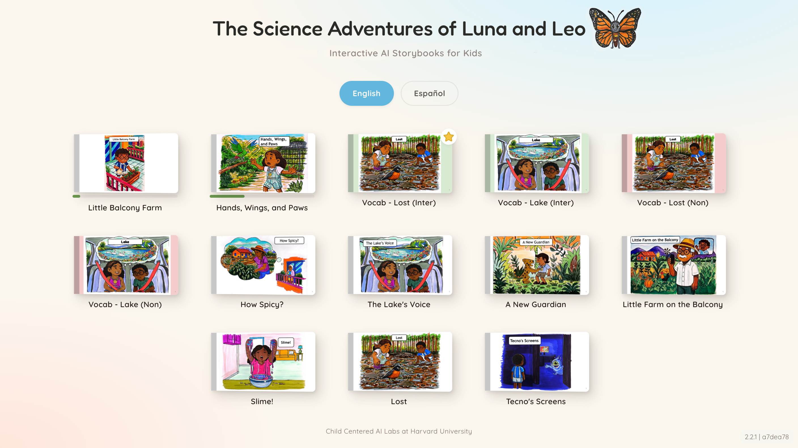
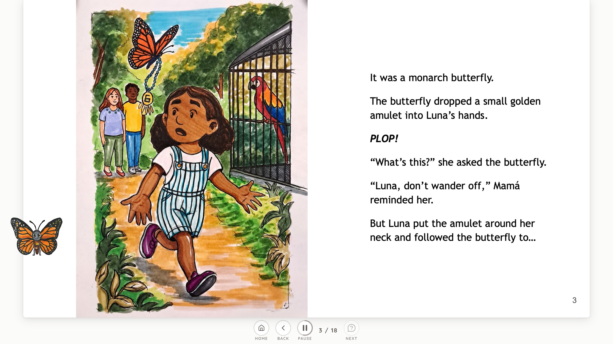
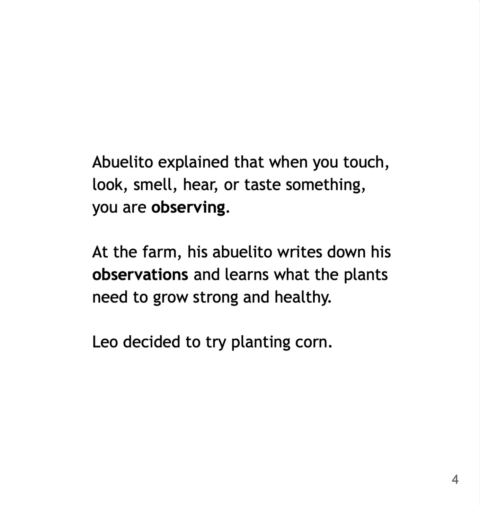
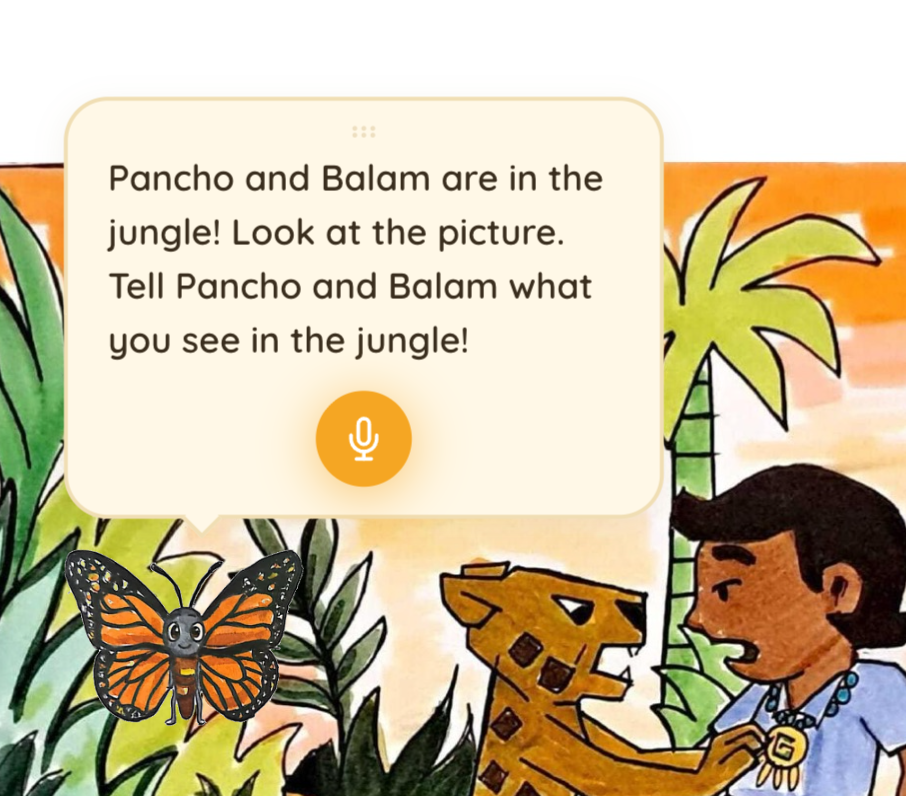

Funding
Funded by the National Science Foundation
See our proposal and supplement.
Bilingual science stories designed to get young learners reading, talking, and thinking.

Stories are available in English and Spanish, supporting science learning across languages.
Children encounter science concepts through engaging narratives that encourage them to observe, predict, question, and reason about the world around them.
Example pages pulled directly from the platform - in both English & Spanish, including moments to display general platform features.

Bilingual by Design

Science Through Storytelling

Interactive Conversations
See our proposal and supplement.